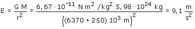

De acuerdo con el teorema de Gauss, la Tierra vista desde fuera se comporta como si toda su masa estuviera concentrada puntualmente en su centro:

En la posición del satélite hay campo gravitatorio un poquito menor que en la superficie de la Tierra ¿Entonces por qué dentro del satélite las cosas flotan y no pesan?
 |
Una pelota abandonada dentro del satélite
quedará inmóvil |
Por la misma razón si el astronauta intenta pesarse la báscula no marcará nada:
Para que un muelle se comprima, uno de sus extremos tiene que apoyarse en una superficie fija (El suelo). En este caso muelle y suelo están moviéndose de igual manera y no hay apoyo posible